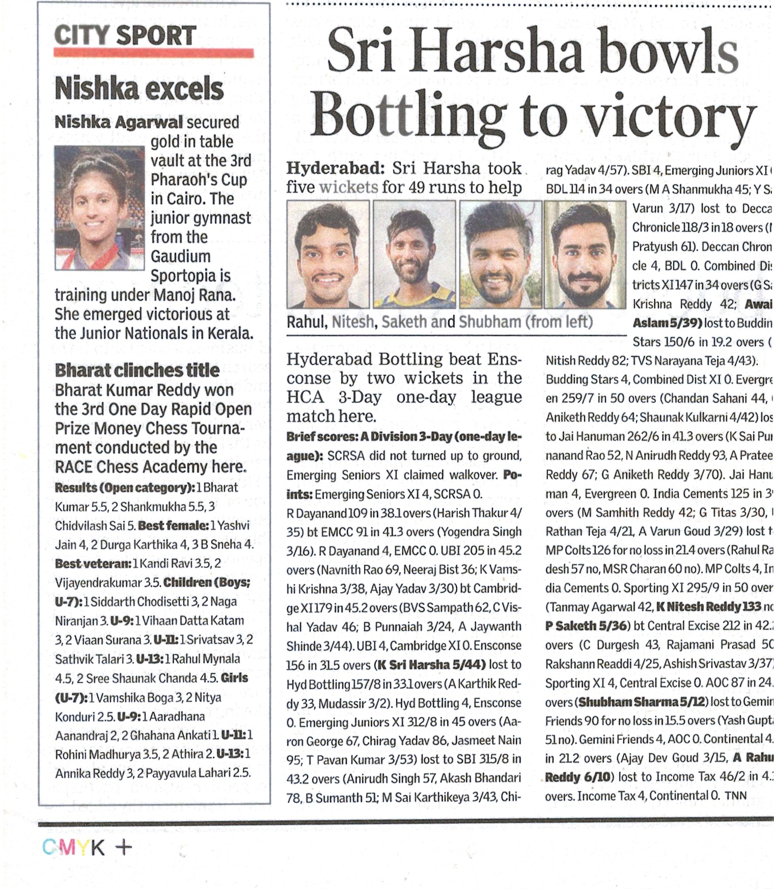
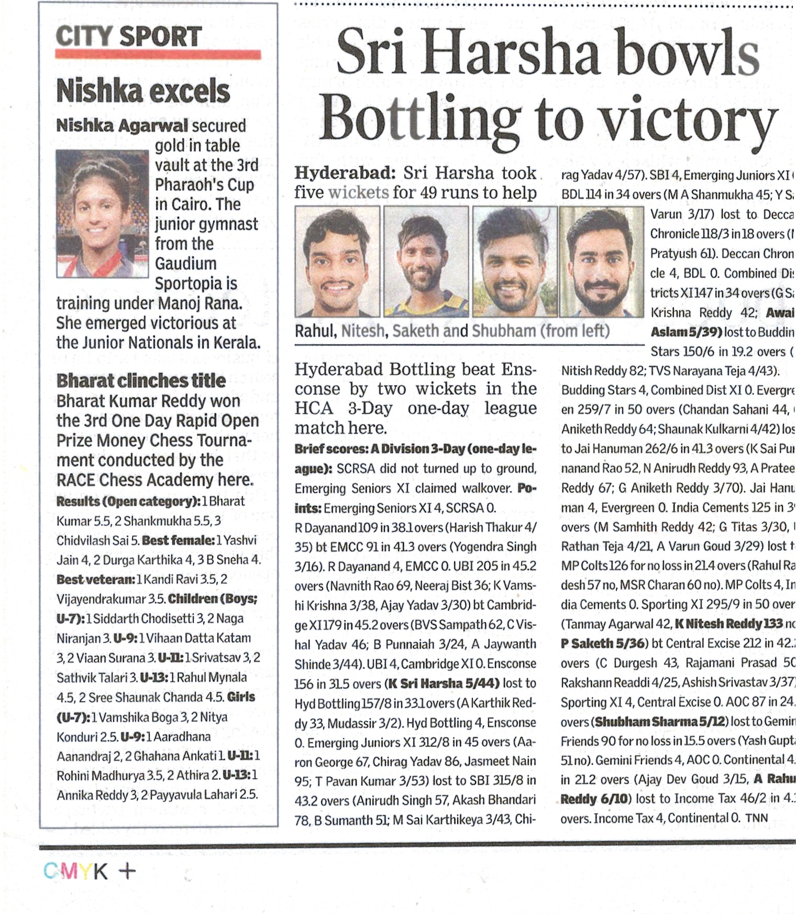

Professional Summary
I am a passionate and committed professional cricketer with over eight years of competitive experience, specializing as a left-hand middle-order batsman and left-arm orthodox bowler. I have represented the Hyderabad Cricket Association across multiple age categories, including U-23 and U-25, and have been part of the Hyderabad Ranji probables for the past three seasons. My career also includes playing for Income Tax Hyderabad, Deccan Chronicle, and Osmania University at the All India Inter University tournament. Recognized as a consistent wicket-taker in HCA leagues, I am driven to continually excel and aspire to represent my state and country at the highest level.
Experience
- Hyderabad Ranji Probables – Last 3 seasons
- Represented HCA U-25 – State level representation
- Represented Hyderabad U-23 – State level representation
- Income Tax Hyderabad – 3 years of professional cricket
- Deccan Chronicle – 3 years of professional cricket
- Osmania University – All India Inter University representation
- Hyderabad Cricket Association
Achievements
- Leading wicket taker in HCA A Division leagues 2022–23 season
- Leading wicket taker in 1st Division leagues for multiple seasons
- Hyderabad Ranji probables for the last 3 seasons
- Represented Hyderabad Cricket Association in various tournaments
Accomplishments
- 2022–23 HCA 1st Division – 12 innings, 45 wickets – Leading Wicket Taker
- 2021–22 HCA 1st Division – 10 innings, 38 wickets
- 2020–21 HCA 1st Division – 8 innings, 32 wickets – Top Performer
- 2019–20 University Cricket – 5 innings, 18 wickets – Best Bowler (South Zone)
Education
- Osmania University, Hyderabad, Telangana — Engineering (2022)
 
